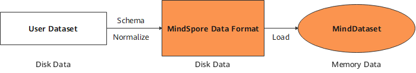
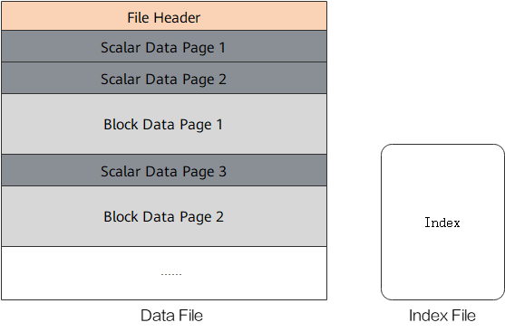

Converting Dataset to MindRecord
Linux Ascend GPU CPU Data Preparation Intermediate Expert

Overview
Users can convert non-standard datasets and common datasets into the MindSpore data format, MindRecord, so that they can be easily loaded to MindSpore for training. In addition, the performance of MindSpore in some scenarios is optimized, which delivers better user experience when you use datasets in the MindSpore data format.
The MindSpore data format has the following features:
Unified storage and access of user data are implemented, simplifying training data loading.
Data is aggregated for storage, which can be efficiently read, managed and moved.
Data encoding and decoding are efficient and transparent to users.
The partition size is flexibly controlled to implement distributed training.
The MindSpore data format aims to normalize the datasets of users to MindRecord, which can be further loaded through the MindDataset and used in the training procedure.

Basic Concepts
A MindRecord file consists of data files and index files. Data files and index files do not support renaming for now.
Data file
A data file contains a file header, scalar data pages and block data pages for storing normalized training data. It is recommended that the size of a single MindRecord file does not exceed 20 GB. Users can break up a large dataset and store the dataset into multiple MindRecord files.
Index file
An index file contains the index information generated based on scalar data (such as image labels and image file names), used for convenient data fetching and storing statistical data about the dataset.

A data file consists of the following key parts:
File Header
The file header stores the file header size, scalar data page size, block data page size, schema, index fields, statistics, file partition information, and mapping between scalar data and block data. It is the metadata of the MindRecord file.
Scalar data page
The scalar data page is used to store integer, string and floating point data, such as the label of an image, file name of an image, and length, width of an image. The information suitable for storage with scalars is stored here.
Block data page
The block data page is used to store data such as binary strings and NumPy arrays. Additional examples include converted python dictionaries generated from texts and binary image files.
Converting Dataset to MindRecord
The following tutorial demonstrates how to convert image data and its annotations to MindRecord.
Import the
FileWriterclass for file writing.from mindspore.mindrecord import FileWriter
Define a dataset schema which defines dataset fields and field types.
cv_schema_json = {"file_name": {"type": "string"}, "label": {"type": "int32"}, "data": {"type": "bytes"}}
Schema mainly contains
name,typeandshape:name: field names, consist of letters, digits and underscores.type: field types, include int32, int64, float32, float64, string and bytes.shape: [-1] for one-dimensional array, [m, n, …] for higher dimensional array in which m and n represent the dimensions.
The type of a field with the
shapeattribute can only be int32, int64, float32, or float64.If the field has the
shapeattribute, only data innumpy.ndarraytype can be transferred to thewrite_raw_dataAPI.
Prepare the data sample list to be written based on the user-defined schema format. Binary data of the images is transferred below.
data = [{"file_name": "1.jpg", "label": 0, "data": b"\x10c\xb3w\xa8\xee$o&<q\x8c\x8e(\xa2\x90\x90\x96\xbc\xb1\x1e\xd4QER\x13?\xff\xd9"}, {"file_name": "2.jpg", "label": 56, "data": b"\xe6\xda\xd1\xae\x07\xb8>\xd4\x00\xf8\x129\x15\xd9\xf2q\xc0\xa2\x91YFUO\x1dsE1\x1ep"}, {"file_name": "3.jpg", "label": 99, "data": b"\xaf\xafU<\xb8|6\xbd}\xc1\x99[\xeaj+\x8f\x84\xd3\xcc\xa0,i\xbb\xb9-\xcdz\xecp{T\xb1\xdb"}]
Adding index fields can accelerate data loading. This step is optional.
indexes = ["file_name", "label"]
Create a
FileWriterobject, transfer the file name and number of slices, add the schema and index, call thewrite_raw_dataAPI to write data, and call thecommitAPI to generate a local data file.writer = FileWriter(file_name="test.mindrecord", shard_num=4) writer.add_schema(cv_schema_json, "test_schema") writer.add_index(indexes) writer.write_raw_data(data) writer.commit()
This example will generate
test.mindrecord0,test.mindrecord0.db,test.mindrecord1,test.mindrecord1.db,test.mindrecord2,test.mindrecord2.db,test.mindrecord3,test.mindrecord3.db, totally eight files, called MindRecord datasets.test.mindrecord0andtest.mindrecord0.dbare collectively referred to as a MindRecord file, wheretest.mindrecord0is the data file andtest.mindrecord0.dbis the index file.Interface Description:
write_raw_data: write data to memory.commit: write data in memory to disk.
For adding data to the existing data format file, call the
open_for_appendAPI to open the existing data file, call thewrite_raw_dataAPI to write new data, and then call thecommitAPI to generate a local data file.writer = FileWriter.open_for_append("test.mindrecord0") writer.write_raw_data(data) writer.commit()
Loading MindRecord Dataset
The following tutorial briefly demonstrates how to load the MindRecord dataset using the MindDataset.
Import the
datasetfor dataset loading.import mindspore.dataset as ds
Use the
MindDatasetto load the MindRecord dataset.data_set = ds.MindDataset(dataset_file="test.mindrecord0") # read full dataset count = 0 for item in data_set.create_dict_iterator(output_numpy=True): print("sample: {}".format(item)) count += 1 print("Got {} samples".format(count))
The output is as follows:
sample: {'data': array([175, 175, 85, 60, 184, 124, 54, 189, 125, 193, 153, 91, 234, 106, 43, 143, 132, 211, 204, 160, 44, 105, 187, 185, 45, 205, 122, 236, 112, 123, 84, 177, 219], dtype=uint8), 'file_name': array(b'3.jpg', dtype='|S5'), 'label': array(99, dtype=int32)} sample: {'data': array([230, 218, 209, 174, 7, 184, 62, 212, 0, 248, 18, 57, 21, 217, 242, 113, 192, 162, 145, 89, 70, 85, 79, 29, 115, 69, 49, 30, 112], dtype=uint8), 'file_name': array(b'2.jpg', dtype='|S5'), 'label': array(56, dtype=int32)} sample: {'data': array([ 16, 99, 179, 119, 168, 238, 36, 111, 38, 60, 113, 140, 142, 40, 162, 144, 144, 150, 188, 177, 30, 212, 81, 69, 82, 19, 63, 255, 217], dtype=uint8), 'file_name': array(b'1.jpg', dtype='|S5'), 'label': array(0, dtype=int32)} sample: {'data': array([ 16, 99, 179, 119, 168, 238, 36, 111, 38, 60, 113, 140, 142, 40, 162, 144, 144, 150, 188, 177, 30, 212, 81, 69, 82, 19, 63, 255, 217], dtype=uint8), 'file_name': array(b'1.jpg', dtype='|S5'), 'label': array(0, dtype=int32)} sample: {'data': array([175, 175, 85, 60, 184, 124, 54, 189, 125, 193, 153, 91, 234, 106, 43, 143, 132, 211, 204, 160, 44, 105, 187, 185, 45, 205, 122, 236, 112, 123, 84, 177, 219], dtype=uint8), 'file_name': array(b'3.jpg', dtype='|S5'), 'label': array(99, dtype=int32)} sample: {'data': array([230, 218, 209, 174, 7, 184, 62, 212, 0, 248, 18, 57, 21, 217, 242, 113, 192, 162, 145, 89, 70, 85, 79, 29, 115, 69, 49, 30, 112], dtype=uint8), 'file_name': array(b'2.jpg', dtype='|S5'), 'label': array(56, dtype=int32)} Got 6 samples